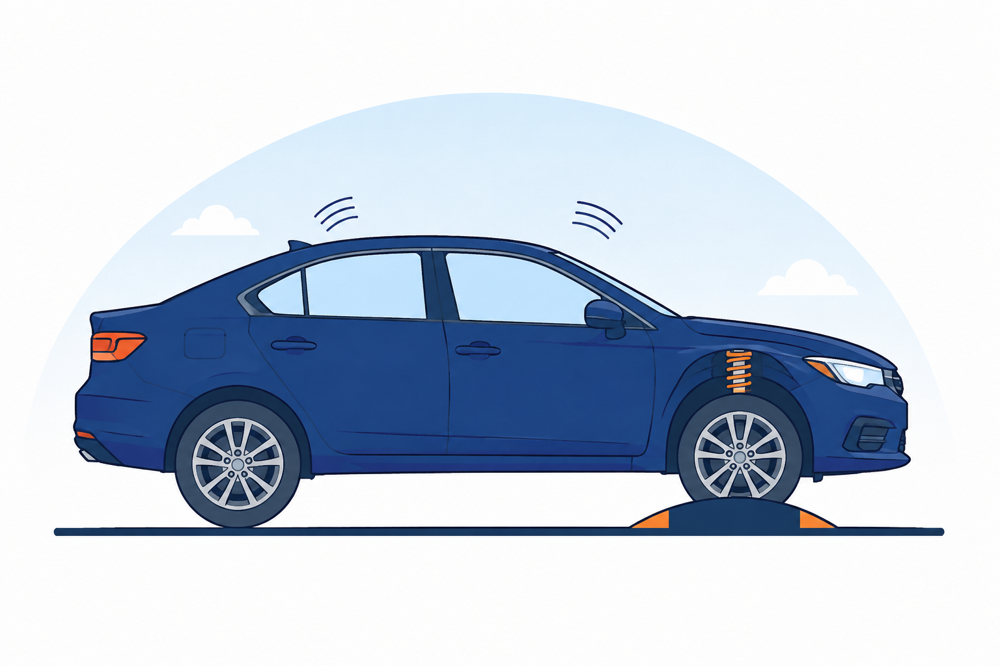

第三节 二阶系统分析 · 典型二阶系统的方框图
开环传递函数
G(s) = \dfrac{\omega_{n}^{2}}{s\,(s + 2\zeta\omega_{n})}
闭环传递函数
\varPhi(s) = \dfrac{\omega_{n}^{2}}{s^{2} + 2\zeta\omega_{n}\,s + \omega_{n}^{2}}

弹簧–质量–阻尼：最典型的二阶物理原型（汽车悬架）
两个特征参数
ζ —— 阻尼比
：决定响应的振荡程度
ω
n
—— 无阻尼振荡角频率
：决定响应的快慢尺度
意义
随动系统、RLC 电路、弹簧–质量–阻尼装置等工程系统都可用二阶模型描述，二阶分析是时域法的核心。